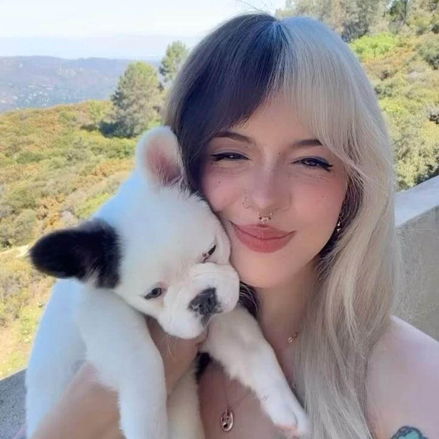
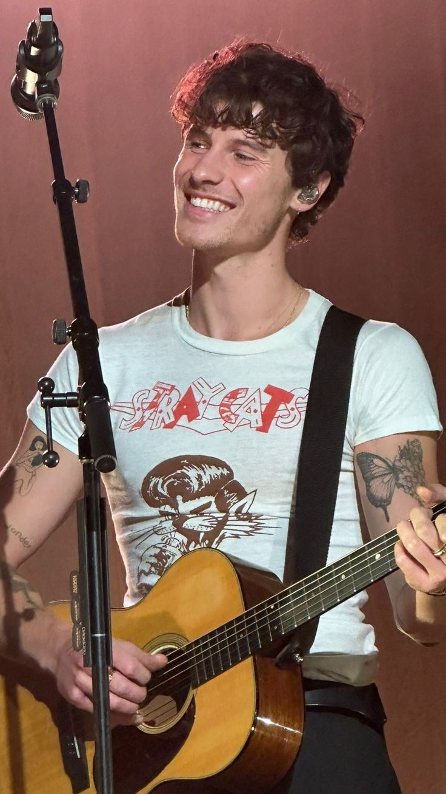
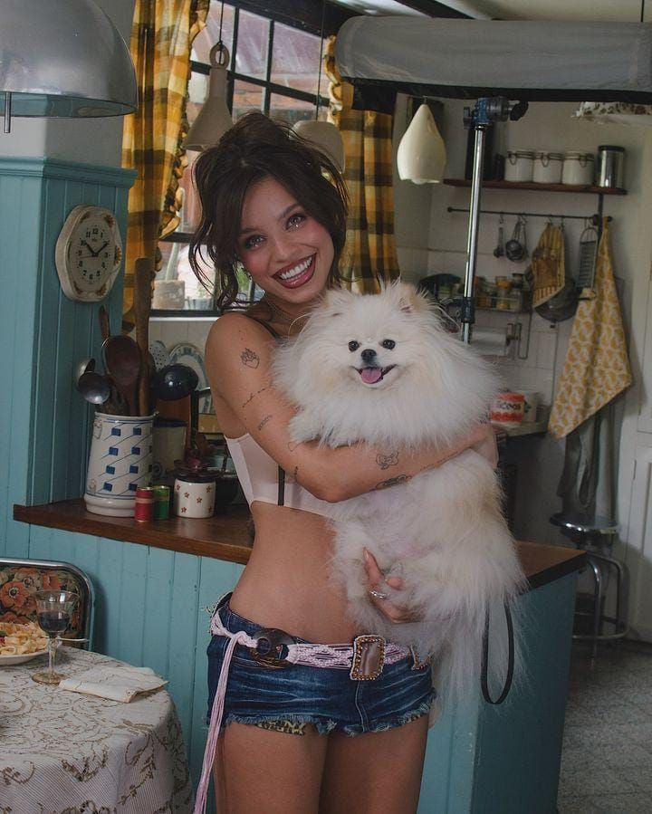
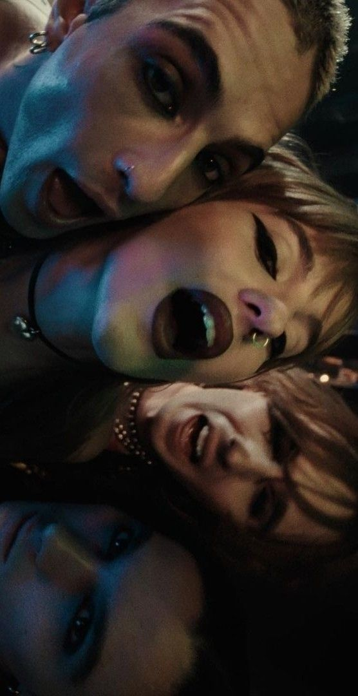

⊹ ₊ ⁺‧₊˚ ♡ ପ(๑•ᴗ•๑)ଓ ♡˚₊‧⁺ ₊ ⊹ I N F L U E N C I A S
⊹ ₊ ⁺‧₊˚ ♡ ପ(๑•ᴗ•๑)ଓ ♡˚₊‧⁺ ₊ ⊹ I N F L U E N C I A S


Melanie Adele Martínez Vargas es una cantautora, guionista, directora, actríz, bailarina, productora y fotógrafa estadounidense de ascendencia dominicana y puertorriqueña. Desde muy pequeña ella empezó a tocar la guitarra y a cantar. Primero audicionó para el programa de talentos vocales de la televisión estadounidense The Voice y se convirtió en miembro del Equipo Adam, donde su popularidad creció rápidamente entre los fanáticos. Dentro de la quinta semana, fue eliminada, lo que posteriormente la llevó a trabajar en material original.

Shawn Peter Raul Mendes, mejor conocido como Shawn Mendes, es un cantante, compositor y guitarrista canadiense. Nació en Toronto, Canadá, el 8 de agosto de 1998. Se da a conocer cuando sus versiones de canciones populares, subidas a la aplicación Vine, se hicieron virales. Gracias a su porte y figura, en febrero de 2019 Shawn Mendes pasó a ser imagen de la marca Calvin Klein para promocionar una línea de ropa interior. Shawn Mendes es quien le da voz al protagonista de la película animada Lyle Lyle Crocodile, el cantante ha confirmado su debut en la industria del cine con este musical basado en el libro infantil de Bernard Waber.

Paulo Ezequiel Londra (Ciudad de Córdoba, Córdoba; Argentina) más conocido como Paulo Londra es un ex-freestyler y trapero procediente de Argentina. El empezó a improvisar/batallar en 2016 en competencias underground como El Quinto Escalón o otras de escenarios como A Cara de Perro. En la actualidad, hace temas de trap o reggaetón, que se especializan en no tocar drogas, sexo u otros temas controversiales, que no son para nada similares como otros artistas, que si tocan esos temas.

María Emilia Mernes, también conocida como Emilia, es una cantante, compositora, actriz y modelo argentina. Nació en Nogoyá, Entre Ríos el 29 de octubre de 1996. Comenzó su carrera siendo la vocalista principal de la banda uruguaya de cumbia pop Rombai, junto a Fer Vázquez, a la cual renunció en abril de 2018. En marzo de 2019 firmó con el sello Sony Music Latin. Comenzó su carrera como solista en 2019, con el lanzamiento de su primera canción, "Recalienta". Antes de la fama, Emilia trabajó de panadera en la panadería de su familia, en su ciudad natal. Además, su primera aparición en el mundo artístico fue como modelo para una campaña de ropa juvenil, que la llevó a Buenos Aires por primera vez. Además, la gira promocional de su album .mp3 rompió récords de ventas, especialmente en Argentina. Emilia logró agotar diez conciertos consecutivos en el Movistar Arena de Buenos Aires.

Måneskin es una banda de rock alternativo de origen italiano formada en Roma en 2016. Esta compuesta por: Victoria De Angelis, Damiano David,Thomas Raggi y Ethan Torchio; y su nombre, proveniente del danés, significa Luz de Luna. La banda se dio a conocer en 2017 mientras participaba en el X Factor Italia, al tiempo que debutaba con el EP Chosen. En enero de 2025, surgieron rumores de separación de la banda debido a los proyectos en solitario de Damiano y Victoria. Sin embargo, se confirmó que Måneskin seguirá activo.